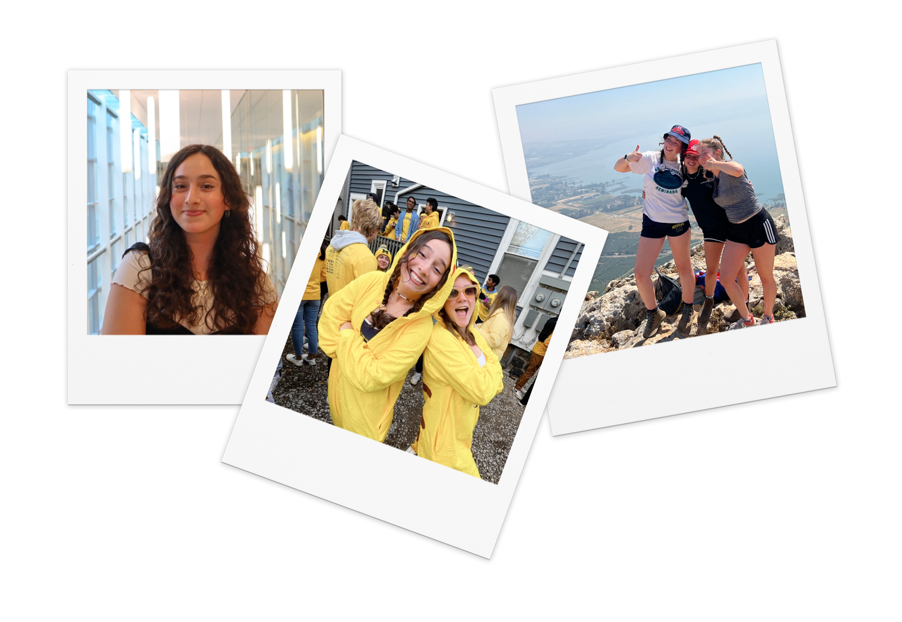
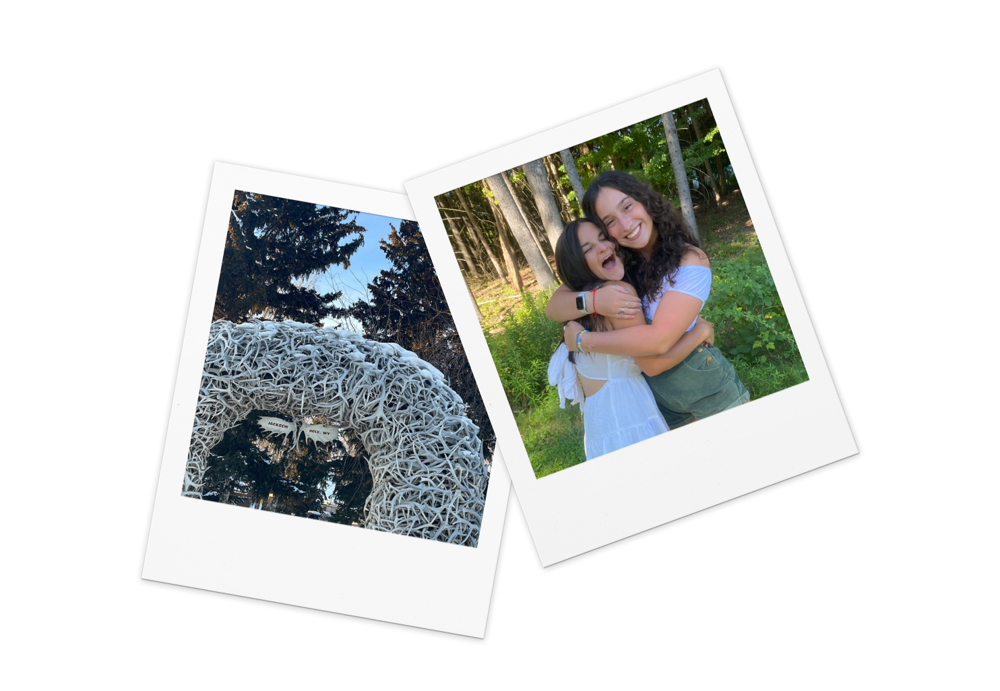

ABOUT ME
Hi, I’m Abby! I’m a junior at the University of Michigan studying Computer Science with a minor in UX Design.


From a young age, I’ve been inspired by the Jewish value of Tikkun Olam, or ‘Repairing the World’; I have a passion for incorporating community-centered values into anything that I do. Even before recognizing my CS interest, I hyper-fixated on creating fun projects using Scratch to make my friends laugh. Now, I’ve discovered that the perfect intersection of my interests is applying CS in combination with UX. By doing so, I can create innovative, user-focused products that are accessible to everyone, no matter their background or experiences.
MY FAVORITES
BOOKS
I read 85 books last year! Fav: The Secret History
MUSIC
Right now I love Arlo Parks & Remi Wolf!
NATURE
On campus, you’ll likely find me out in a hammock
FOOD
I’m a HUGE foodie & regularly use my food Insta
GAMES
I’m currently obsessed with Pokémon GO!